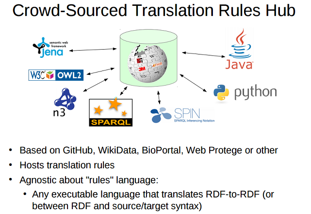
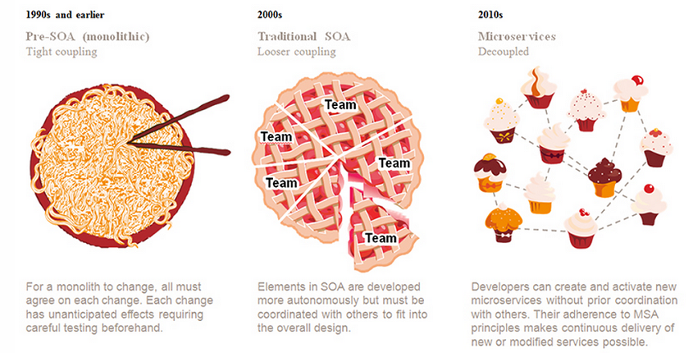
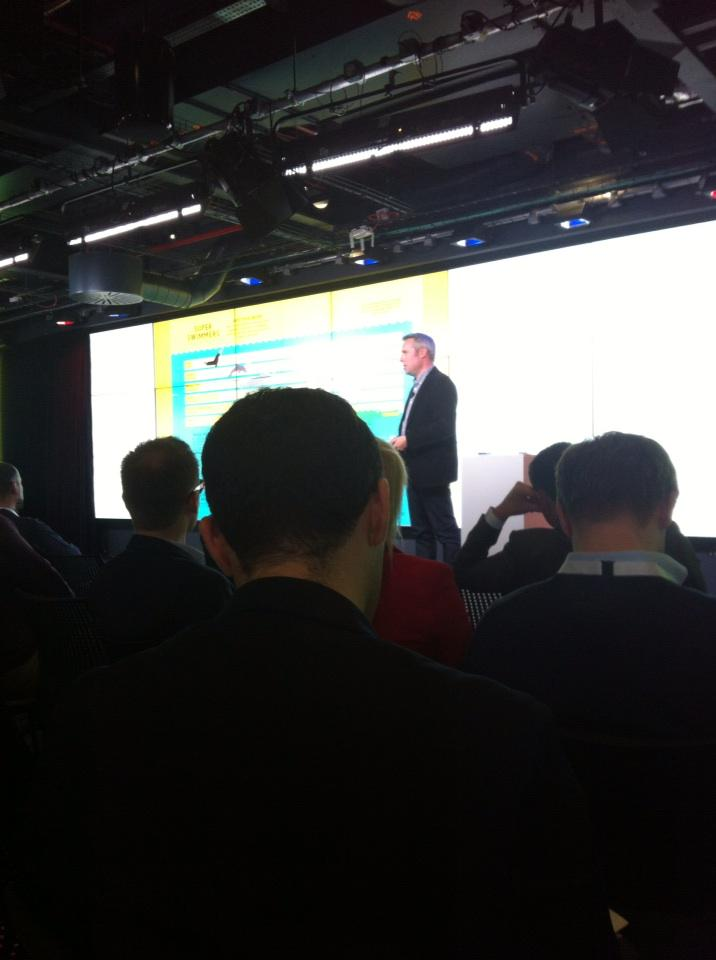
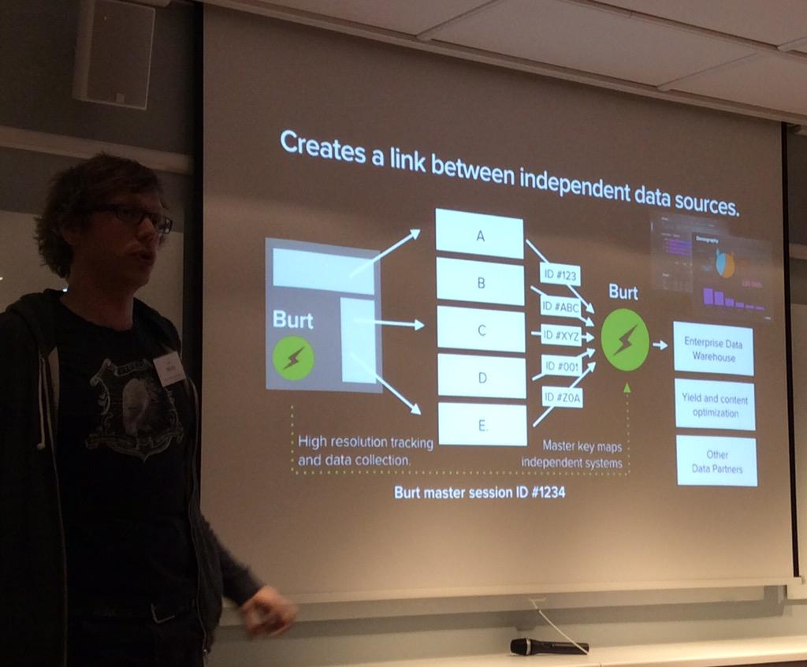
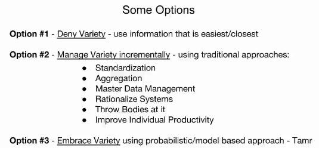
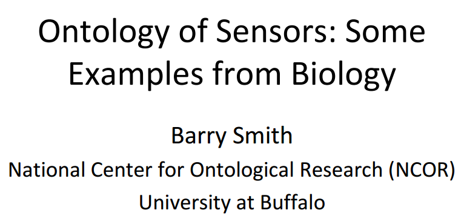
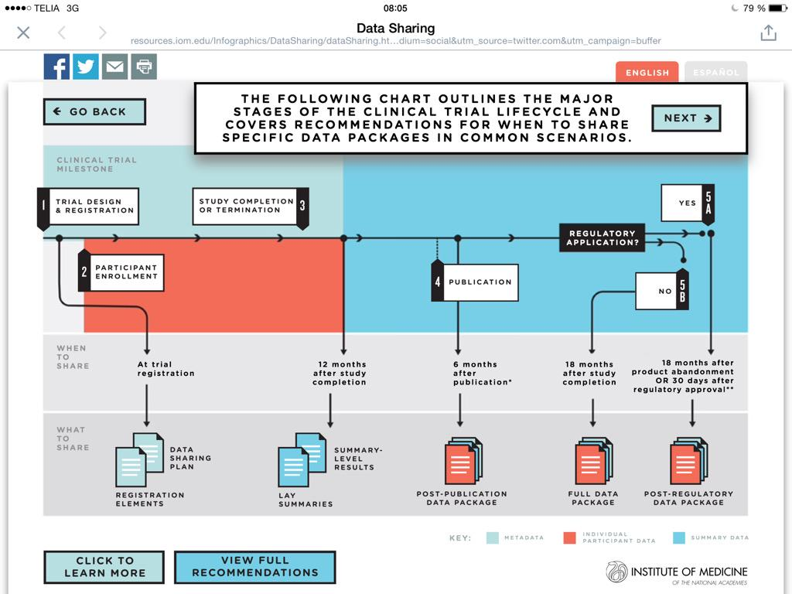

March 2015
Building Ontologies with Basic Formal Ontology | Robert Arp, Barry Smith, Andrew Spear | MIT Press, forthcoming, 2015 ontology.buffalo.edu/smith/bfo-book…
MT @SqrrlData: When it comes to security analytics, #linkeddata lets you explore with clarity sqrr.ly/1GHTFiB pic.twitter.com/83906z9kty
.@siljelb @hakan_nordgren @HL7 Checkout The Yosemite Project: A Roadmap for Healthcare Info Interop yosemiteproject.org
+10 MT @vrandezo: Wikidata is entirely Linked Open Data principles compliant: wikidata.org/wiki/Wikidata:… #wikidata #linkeddata HT @carwash
WEBINAR: Comparing the Yosemite Project and ONC Roadmaps for Healthcare Information Interoperability goo.gl/Kbm6ki (Google On Air)
Testing @hypothes_is' open annotation on a nice @nordicapis' blog post hypothes.is/a/O5cEwwiaRkqr… cc: @bpedro @andreaskrohn #opendata
Bookmarked: "Clinical research informatics and electronic health record data." on CiteUlike ift.tt/1I9tD69
Bookmarked: "A Review of Relational Machine Learning for Knowledge Graphs: From Multi-Relational Link Prediction t… ift.tt/1G4UjGj
"Referring to a string precisely defined in an external standard is as reliable as using a URI" lists.w3.org/Archives/Publi… @mfhepp via @cygri
"badly implemented LOD variant of a standard is worse than the authoritative string from the original standard." lists.w3.org/Archives/Publi…
2[3] @BioSharing Needed: Crowd-Sourced Translation Rules Hub dbooth.org/2014/yosemite/…

.@BioSharing Yes, translations between models & terminologies. But, it is hard! See yosemiteproject.org for Healthcare Info Interop 1[3]
"MicrosSrvices Architecture (MSA) lets you move from quick-and-dirty to quick-and-clean" pwc.com/us/en/technolo… via @PwC_LLP #microservices
Pre-SOA: Pasta, SOA: Pizza, Microservices: CupCakes Agile coding in enterprise IT pwc.com/us/en/technolo… via @PwC_LLP

@jessiet1023 I'm aware of this yosemiteproject.org Any other to be aware of? (Thx for a great #TBICRI15 feed)
Finally, I've a concrete reason to look into Doman Driven Design #DDD so I'm watching this video bit.ly/1L0HRfs /by @ericevans0
My #FF #FollowFriday this week is @egonwillighagen See why on my 2015 list medium.com/@kerfors/my-fo…
@RogerHoward Two old open.hpi.de/courses/2d1ede… france-universite-numerique-mooc.fr/courses/inria/… one active euclid-project.eu I'll add to kerfors.blogspot.se/p/linked-data-…
Bookmarked: "Clinical information modeling processes for semantic interoperability of electronic health records: s… ift.tt/1E5PZHR
Hence #jsonld googlewebmastercentral.blogspot.se/2015/03/easier… -> RT @kennedianskt: Simon Rogers, Google: "pdf:s is where data goes to die"

"master key identifiers" --@nelvig co-founder @burtcorp How about talking at eventbrite.com/e/lankade-data… #LankadeData ?

Agree, easy to use also for newbies MT @dr_thakker: highly recommended for anyone wanting to use collaborative LaTeX overleaf.com
Sunny morning on the bus catching up on #TBICRI15 @AMIAinformatics Joint Summits on Translational Science? amia.org/jointsummits20…
Looking forward to this MOOC, start 8 April -> RT @EX101x: Unbelievable, we have reached 12.500+ participants! ow.ly/Kx1YX
This week my #FF #FollowFriday is @SaraRiggare see why I follow Sara on my 2015 list medium.com/@kerfors/my-fo…
Just learned about. Cool -> MT @paolociccarese: From CATCH to HarvardX to Annotopia: hcklab.blogspot.com/2014/02/from-c… #mooc #annotopia
@dn_malin Perfekt. Vi kör ett 3:e meetup om #lankadedata #oppnadata denna gång i Göteborg 28 april eventbrite.com/e/lankade-data… Välkommen
Gillar dnide.dn.se HT @matsbjork <- @dn_malin @pwolodarski Några planer på data.dn.se ? Se data.nytimes.com
Dear tweeps, any more examples of corporations with #opendata sites and ambitions? w3.org/wiki/OpenDataC… Proposals and RT = <3
Excellent slide deck by @ericaxel "SEO Meets Semantic Web" slideshare.net/ericaxel/saint… #semanticweb #linkeddata #rdf
Pointing colleagues to @pgroth's excellent Tutorial for @w3c Provenance #prov github.com/pgroth/PROVTut…
@pernillan @erikboralv @andreaskrohn Välkomna till vårt #lankadedata meetup i Göteborg 28 april. @peterkz_swe @MetaSolutionsAB kommer
Thought leaders in #oppnadata #lankadedata webbstrategiforalla.se/kerstin-forsbe… @pernillan @peterkz_swe @erikboralv @andreaskrohn @MetaSolutionsAB
My most RT:ad tweet just got a "second life" twitter.com/kerfors/status… <- will it go above 200 RTs?
MT @SaraRiggare: When in healthcare (1 hr/yr), I am a patient, the other 8,765 hrs, I am a selfcare expert pic.twitter.com/o7ooKmbuQk
Web of Data, the future of the web as we know it. Explained by the chief architect W3C, @philarcher1 28/4 Göteborg eventbrite.com/e/lankade-data…
MT @novastaylor: Today our group presents a draft RDF data cube at #PhUSECSS. You may enjoy these early d3JS models youtu.be/9BH_hXmXklU
A year ago I wrote about #MOOCT (Massive Open Online Trial) medium.com/p/participatin… This week Apple's #ResearchKit makes it a reality?
@egonwillighagen Hmm, see also FieldWise: a mobile knowledge management architecture (2000) dl.acm.org/citation.cfm?i… But, timing is important
Catching up with #ResearchKit and thinking of my previous boss and colleagues: Framtidens patientinteraktion (2008) gupea.ub.gu.se/handle/2077/10…
I've learned a lot about #DataVirtualization and @CiscoDataVirt this week. However, I do lack a #LinkedData approach kerfors.blogspot.se/p/linked-data-…
Will be interesting to learn more about the data, and metadata, output from medical research studies apps using #ResearchKit
Catching up with all the buzz about #ResearchKit. Both positive nature.com/news/smartphon… and more cautious statsdoc.wordpress.com/2015/03/10/app…
"JSON-LD, the powerful brother of JSON" --@devnook updates.html5rocks.com/2015/03/creati… HT @tomayac
MT @danbri: web components + json-ld + schema.org = googlewebmastercentral.blogspot.com/2015/03/easier… #jsonld #linkeddata
@cdsouthan Hi Chris, register for the event: eventbrite.com/e/lankade-data… If you want to join our planning group: ping @flandqvist cc: @Findwise
Sunny morning on my way to @Findwise's office for one more planning "fika" for our #lankadedata meetup in Gothenburg 28April.
@wunderkraut_se Hej, tack för att du/ni följer mej. Intresserad av #lankadedata och #oppnadata? Vi planerar en meetup eventbrite.com/e/lankade-data…
MT @PHUSETwitta Clinical Data Science: youtu.be/UoYl7eCesqw?a Data to Knowledge D2K phuse.eu/D2K.aspx
"With CDISC RDF – a unique situation: data and meta data available for all steps in the process" --@MarcJuAndersen #CDISC #SemanticWeb
"ALFA for defining fine-grained authorization rules in a JSON-like policy language (compiles down to XACML)" nordicapis.com/building-a-sec…
Open Glossary for #openscience HT @Protohedgehog blogs.egu.eu/network/palaeo… <- In a pdf, how about #opendata 5stardata.info ?
Alphabetic list of ontologies and institutions/groups using BFO (Basic Formal Ontology) ifomis.uni-saarland.de/bfo/users #ontology
+1 MT @PeterSpeyer: Options for managing data variety @andyhpalmer at #StrataHadoop webinar #bigdata #datascience

Linked Sensor Data cube slideshare.net/140er/linked-s… @laurentlefort feautred by Ingo Simonis #IoT #ontologysummit ontolog.cim3.net/file/work/Onto…
Will do -> MT @ontologysummit: Join Barry Smith + "Ontology of Sensors: Bio Example" bit.ly/1DYMxM9 12:30EST

MT @manusporny: Intro to verifiable credentials on the Web (JSON-LD + Cryptography + Identity): youtube.com/watch?v=eWtOg3… ping @travisspencer
"Needs Location Job to be Done | Context + Personalisation" Mobile World 15 years after Instant Context Technologies feed.ne.cision.com/Commands/File.…
"One of the first PhD in Mobile" @johansan at @hiqinternat seminar. Nice o be co-author (back in 2000) with Johan dl.acm.org/citation.cfm?i…
"data must be accessible in a form that will allow investigators to easily search and computationally analyze" ja.ma/1AK6pxZ
Looking forward to learn more about #DataVirtualization, @CiscoDataVirt and Cisco Information Server (CIS), aka Composite, next week
Just completed #FLValuingHealth MOOC from @sheffielduni @FutureLearn Measuring and Valuing Health #PROMs #QALYs futurelearn.com/courses/valuin…
Perfect follow up for me RT @nordicapis: Techniques and Technologies to Increase API Security nordicapis.com/building-a-sec…
Sharing Clinical Trial Data: Maximizing Benefits, Minimizing Risk @theIOM resources.iom.edu/Infographics/D… #ctdata #alltrials

"I concluded that the semantic way + Research Concepts is the right approach" --Dave Iberson-Hurst @Assero_UK assero.co.uk/2015/right-too… #CDISC
@SpotifyPlatform @dancow Examples of http-based URIs for Beyoncé wikidata.org/wiki/Q36153 and bbc.co.uk/things/6e379c3… #LinkedData
Google's #KnowledgeVault ("like many other KBs it stores information as #RDF triples") in Swedish news @svtnyheter svt.se/nyheter/vetens…
Touring the @SpotifyPlatform API compciv.org/recipes/data/t… <- HT @andreaskrohn How about #JSONLD youtu.be/rvfaou6PGwA cc @MarkusLanthaler